"Єдине, чого можна боятися, це страх" було тупою порадою.
Авжеж, не скуповуй туалетний папір - але якщо політики самі бояться страху, вони знецінюватимуть реальні небезпеки, щоб уникнути "масової паніки". Страх не є проблемою, проблема те, як ми "транслюємо" наш страх. Він дає нам енергію, щоб впоратися з нагальними небезпеками та підготуватися до небезпек майбутнього.
Направду, ми (Марсель, епідеміолог та Ніккі, ілюстрації/код) стурбовані. Можемо побитися об заклад, що ти теж! Тому ми спрямували наш страх у створення цих інтерактивних симуляцій, щоб ти міг спрямувати свій страх у розуміння:
- Останні декілька місяців (епідеміологія 101, SEIR модель, R & R0)
- Наступні декілька місяців (закриття країн, відстеження контактів, маски)
- Наступні декілька років (втрата імунітету? немає вакцини?)
Цей гайд (опублікований 1 травня, 2020. натисни на примітку!→1) має за мету дати тобі надію ТА страх. Щоб подолати COVID-19 у спосіб який також захищає наше ментальне та фінансове здоров'я, нам потрібний оптимізм, щоб будувати плани, та песимізм, щоб мати план Б. Як сказав Gladys Bronwyn Stern, “Оптиміст будує літаки, а песиміст шиє парашути.”
Тож пристебнися: ось-ось ми потрапимо в зону турбулентності.

Пілоти користуються симуляторами польотів, щоб навчитися, як не нищити літаки.
Епідеміологи користуються симуляторами епідемій, щоб навчитися, як не винищити людство.
Тож давай зробимо дуже, дуже простий "епідеміологічний симулятор польотів"! У цій симуляції,
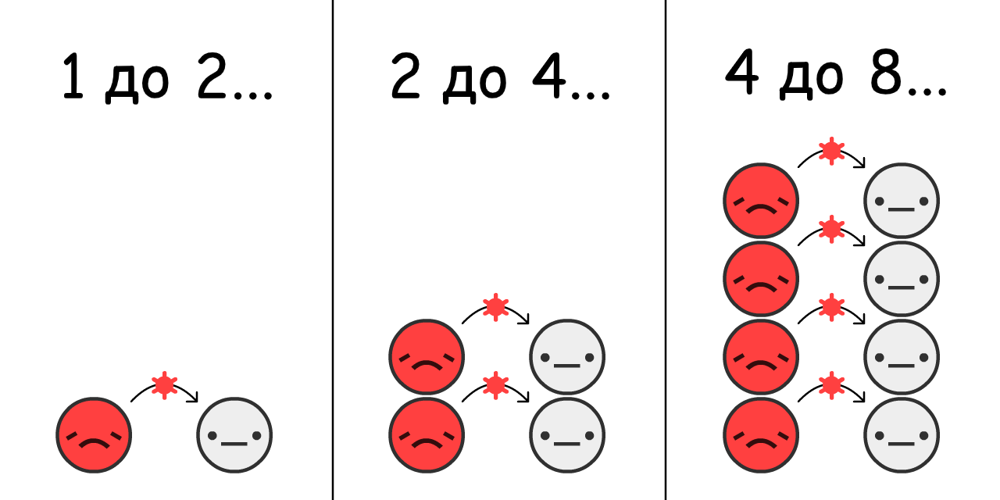
Згідно з оцінками, напочатку спалаху COVID-19, вірус перестрибує з
Якщо ми симуляємо "подвоєння кожні 4 дні" і нічого більше, у населення, починаючи з 0.001%
Натисни"Старт", щоб зіграти в симуляцію! Ти можеш перепрограти її пізніше з іншим налаштуваннями: (технічна обмовка: 3)
Це пряма експоненційного зростання. Починає потихеньку, потім вибухає. Від "Ой та це ж просто ОРВІ" до "Добре, застуди не створюють масові кладовища у багатих містах".
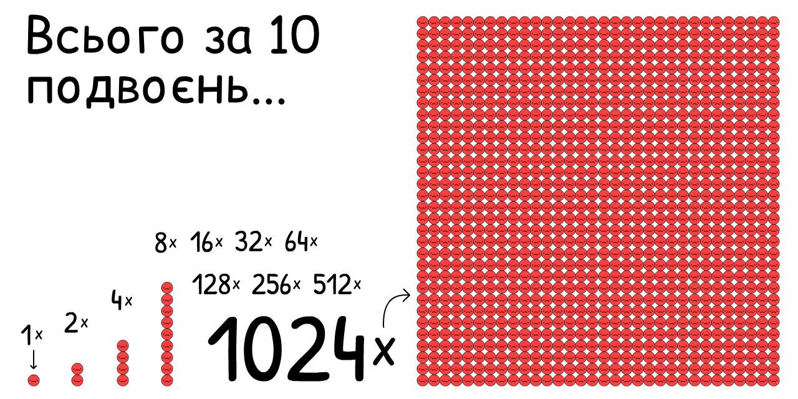
Але ця симуляція не вірна. На щастя, експоненційне зростання не може продовжуватися вічно. Одна річ, яка зупиняє вірус від поширення, це коли інші "вже" мали вірус:
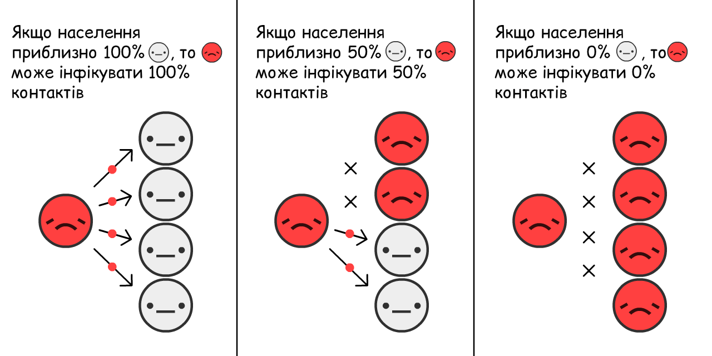
Чим більше
Як це змінює зростання епідемії? Давайте дізнаємося:
Це логістична крива зростання. у формі S. Починає з малого, вибухає, потім знову сповільнюється.
Але ця симуляція все ще не вірна. Ми оминаємо той факт, що
Заради спрощення, уявімо, що всі
Згідно з оцінками щодо COVID-19, ти залишаєшся
Це протилежність експоненційного зростання, експоненційна крива згасання.
Що стається, якщо ми симуляємо S-криву логістичного зростання з одужанням?

Давайте поглянемо.
Червона крива це поточні випадки
Сіра крива це загальна кількість випадків (поточні + одужавші
І це звідки походить та сама відома крива! Це не дзвіноподібна крива і навіть не "логнормальна" крива. Вона не має назви. Але ти бачив(ла) її мільярди разів, заприсягшись вирівняти криву.
Це ВІО Модель,5
(
друга найважливіша ідея Епідеміології 101:
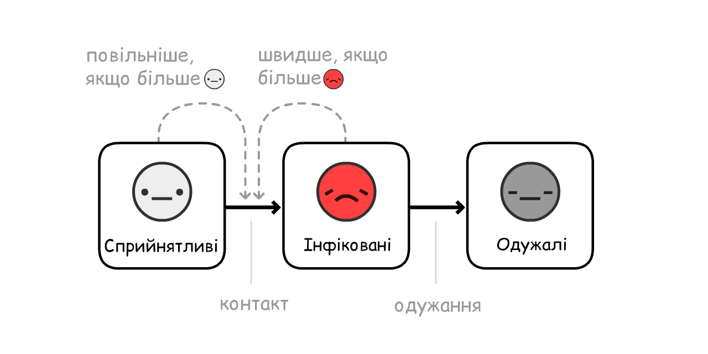
Примітка: Симуляції, якими формують політику, набагато, набагато складніші, ніж ці! Але ВІО Модель може пояснити ті ж загальні відкриття, навіть якщо бракує деталей.
Насправді, додаймо одну деталь: перед тим, як
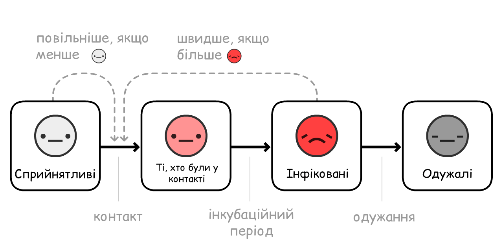
(Цей варіант називається ВІОК Модель6, де "К" означає
Згідно з оцінками COVID-19, ти
Червона + Рожева крива це поточні виподки (активні носії
Сіра крива це загальна кількість випадків (поточні + одужавші
Не багато змінюється! Як довго ти залишаєшся
Чому так? Тому що перша-найважливіша ідея Епідеміології 101:

Скорочено від "Репродукції" (Reproduction). Це середня кількість людей, яку інфікує
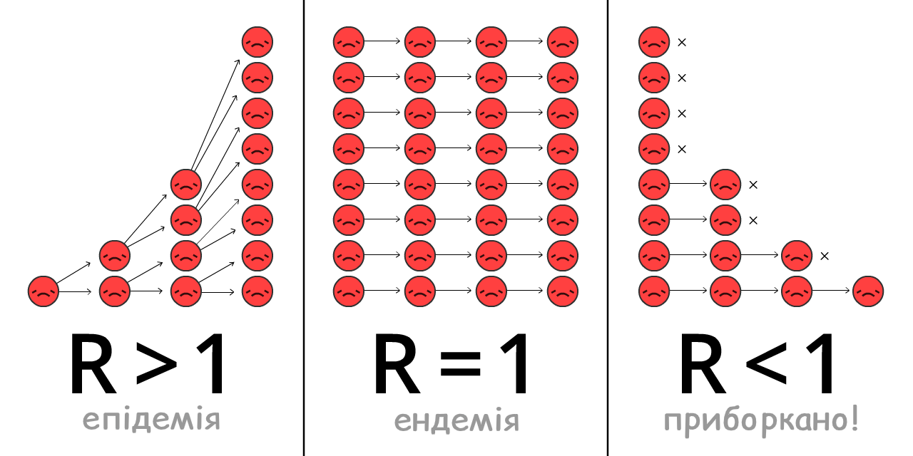
R змінюється протягом епідемії з виробленням імунітету та коли вживаються спеціальні заходи.
R0 це те, якою була R напочатку епідемії, перед виробленням імунітету та вжиттям заходів. R0 більш точно відображає потужність самого вірусу, але все одно може різнитися. Наприклад, R0 вище у густонаселених містах, ніж у сільській місцевості.
(Більшість новинних статей – навіть деякі наукові дослідження! – плутають R та R0. Так, наукова термінологія погана.)
R0 для сезонних ОРВІ приблизно 1.288. Це означає, що на початку спалаху грипу, кожен
Згідно з оцінками, R0 для COVID-19 складає 2.2,9 втім одне ще не закінчене дослідження вказує, що R було 5.7(!) у Вухані.10
У наших симуляціях – на початку та в середньому –
Пограй з цим R0 калькулятором, щоб побачити, як R0 залежить від часу одужання та швидкості нових заражень:
Але пам'тай: чим менше
Коли достатня кількість людей має імунітет, R < 1, епідемія під контролем! Це називається колективним імунітетом. Для грипів, колективний імунітет досягається за допомогою вакцинації. Намагатися досягти "природнього колективного імунітету", дозволячи масове інфікування, жахлива ідея. (Але не з тої причини, яка одразу спала на думку! Ми пояснимо це пізніше.)
Давай ще раз запустимо SEIR модель, але демонструючи R0, R з плином часу та з рубіжем колективного імунітету:
Примітка: Загальна кількість випадків не припиняє рости після досягнення колективного імунітету, а перескакує його! І вона перетинає рубіж у той же час, як кількість поточних випадків досягає піку. (Це відбувається незалежно від того, як ти зміниш налаштування, - спробуй сам(а)!)
Це відбувається тому, що коли є більше не-
Якщо ти можеш взяти лише один урок з цього гайду, ось він – це надзвичайно складна діаграма, тому, будь ласка, дай собі часу, щоб повністю її зрозуміти:
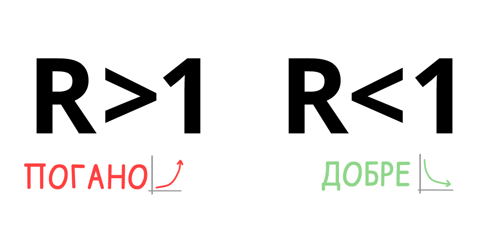
Це значить: нам НЕ потрібно відстежити усі інфікування або майже усі інфікування, щоб зупинити COVID-19!
Це парадокс. COVID-19 надзвичайно заразний, але щоб стримати його, нам необхідно зупинити "лише" понад 60% захворювань.60%?! Якщо б це була оцінка в університеті, то лише E (задовільнення мінімальних критеріїв.) Але якщо R0 = 2.5, зменшення його на 61% дає нам R = 0.975, тобто R < 1 і вірус приборкано! (точна формула:12)
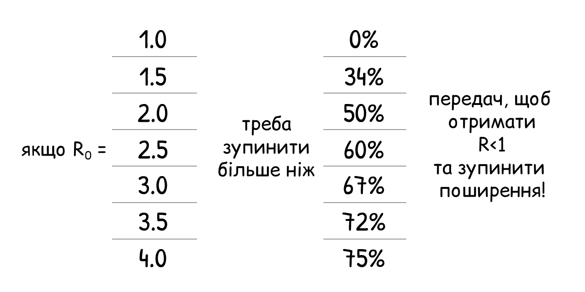
(Якщо ти думаєш, що R0 або інші числа у нашій симуляції завеликі чи замалі, добре, що ти ставиш під сумнів наші припущення! У кінці гайду ти знайдеш "Режим Пісочниці", де ти зможеш задати свої числа й побачити, що вийде.)
Кожний захід для запобігання COVID-19, який ти коли-небудь чув(ла) – миття рук, соціальне дистанціювання, закриття країн, самоізоляція, відстеження контактів та карантини, маски, навіть колективний імунітет - усі вони роблять одне й те ж:
Знижують R до R < 1.
Тож зараз давай скористаємося нашим "епідеміологічним симулятором польотів", щоб з'ясувати, як ми можемо досягти R < 1 у спосіб, який який також захищає наше психологічне та фінансове благополуччя?
Приготуйся до аварійної посадки...
...могли би бути ще гіршими. Ось паралельна реальність, якої ми уникли:
Сценарій 0: Ніяк не діяти
Приблизно 1 з 20 хворих на COVID-19 потребує палату інтенсивної терапії (ПІТ).13 У багатій країні як США, існує 1 ліжко у такій палаті на кожні 3400 людей.14 Тож США може дозволити 20 з 3400 одночасно інфікованих людей - або ж 0.6% населення.
Навіть якщо ми збільшимо місткість ПІТ більше ніж у 3 рази до 2%, ось, що би відбулося, якщо ми не вживали ніяких заходів:
Виглядає не дуже добре.
Цього висновку дійшли the March 16 Imperial College report: не вживаючи ніяких заходів, у нас переповнюються ПІТ і 80% населення будуть інфіковані. (пам'тай, загальна кількість випадків перестрибує колективний імунітет)
Навіть якщо лише 0.5% інфікованих помирають – оптимістичне припущення, коли не залишилось ПІТ, - у великій країні як США з населенням у 300 мільйонів 0.5% від 80% з 300 мільйонів = 1.2 мільйонів померлих... ЯКЩО б ми бездіяли.
(Багато новин та соціальних мереж повідомляло, що "80% населення будуть інфікованими", забуваючи додати "ЯКЩО МИ НІЧОГО НЕ РОБИТИМЕМО". Весь страх було перенаправлено у кліки та лайки, а не обміркування ситуації. Ох.)
Сценарій 1: Вирівняти криву / Колективний імунітет
План "Вирівняти криву" було прорекламовано кожною організацією з охорони здоров'я, в той час, як першопочатковий план "колективного імунітету" Великобританії викликав загальне несхвалення. То був однаковий план. Просто Великобританія не змогла комунікувати його правильно. 15
Втім обидва плани мають буквально фатальні недоліки.
По-перше, давай поглянемо на два основні способи "вирівняння кривої": миття рук та фізичне дистанціювання.
Інтенсивніше миття рук зменшує розповсюдження грипу та застуди на ~25%16 у заможних країнах, в той час, як повне закриття міста як Лондон зменшує кількість контактування між людьми на ~70%17. Тож давай припустимо, що миття рук може зменшити R аж на 25%, а дистанціювання на 70%:
Пограй з цим калькулятором, щоб побачити, як % не-
Тепер давай змоделюєм, що трапиться з епідемією COVID-19, якщо, починаючи з березня 2020, ми б збільшили миття рук, але ввели лише помірне фізичне дистанціювання – R знижується, але все ще більше 1:
Три примітки:
Це зменшує загальну кількість випадків! Навіть якщо R < 1, зменшення R все одно зберігає життя, зменшуючи стрибок над колективним імунітетом. Багато людей думають, що "вирівняння кривої" розподіляє кількість заражень у часі, але не зменшує загальну кількість випадків.Це неможливо у будь-якій моделі Епідеміології 101. Оскільки у новинах поширювався меседж, що не можливо уникнути інфікування 80%+ населення, люди зробили висновок, що неможливо повпливати на загальну кількість заражень. Ох.
Через зовнішнє втручання та вжиття заходів, поточна кількість випадків досягає піку перед досягненням колективного імунітету. Насправді, у цій симуляції загальна кількість випадків зовсім трохи перестрибує рубіж колективного імунітету - план Великобританії! На тому етапі R < 1, можна зупинити будь-які втручання і COVID-19 залишиться під контролем! Що ж, лише з однією проблемою...
Все одно закінчаться місця у палатах інтенсивної терапії. На декілька місяців (і не забувай, що ми вже збільшили місткість ПІТ у три рази для симуляцій)
Це ще одне відкриття з доповіді Imperial College від 16 березня, яке переконало Великобританію покинути першопочатковий план. Будь-яка спроба пом'якшення ефектів (зменщення R, але R > 1) зазнає невдачі. Єдиний спосіб це активна протидія (зменшення R до R < 1).

Тобто не достатньо просто "вирівняти" криву, потрібно розчавити криву. Наприклад, за допомогою...
Сценарій 2: Закриття міст/країн протягом місяців
Давай подивимося, що стається, коли ми розчавлюємо криву з 5 місяцями у закритому режимі, зменшенням
Упс.
Це та сама друга хвиля, про яку всі говорять. Як тільки ми виходимо з карантину, ми знову отримуємо R > 1. Тож декілька залишених
Закриття міст не рецепт успіху, а лише можливість для перезавантаження.
Тож що, ми маємо закривати міста знову і знову?
Сценарій 3: Періодичні закриття міст
Це рішення було вперше запропоноване у доповіді Imperial College від 16 березня і пізніше у статті з Harvard.19
Ось симуляція: (Після того, як програєш запрограмовний сценарій, спробуй змоделювати свій графік карантинів, змінюючи повзунки під час програвання симуляції! Пам'ятай, що ти можеш зупинити і відновити гру та змінити її швидкість.)
Це дозволило би стримувати кількість випадків і не переповнювати палати інтенсивної терапії! І це набагато краще, ніж 18-місячний карантин, допоки стане доступною вакцина. Нам просто необхідно...закрити міста на декілька місяців, відкритися на декілька місяців і повторювати це, аж поки не з'явиться вакцина. (І якщо вакцини не буде, продовжувати цей сценарій до досягнення колективного імунітету...десь до 2022 року.)
Звісно, круто просто провести лінію "Місткості палат інтенсивної терапії", але існує багато важливих факторів, які ми не можемо змоделювати тут. Наприклад:
Психологічне здоров'я: Самотність - одне з найбільших джерел депресії, тривожних розладів та суїцидів. А ще вона може призводити до ранньої смерті на рівні 15 викурених цигарок в день.20
Фінансове здоров'я: "А що з економікою?" звучить так, ніби гривні важливіші за людські життя, але "економіка" - це не лише про акції: це також про спроможність людей забезпечувати себе та свої родини їжею та дахом над головою, інвестувати у майбутнє дітей, насолоджуватися мистецтвом, їжею, відеоіграми - речі, які наповнюють наше життя сенсом. До того ж, сама по собі бідність жахливо впливає на психологічне та фізичне здоров'я.
Ми не кажемо, що ми не повинні знову сідати на карантин! Ми розглянемо "періодичні карантини" трохи пізніше. Все ж, це не ідеальний варіант.
Але зажди...хіба Тайвань та Південна Корея вже не приборкали COVID-19? На цілих 4 місяці, без довготривалих закриттів міст?
Як?
Сценарій 4: Тестувати, Відслідковувати, Ізолювати
"Авжеж, ми *могли би* зробити те, що зробили Тайвань та Південна Корея напочатку, але вже занадто пізно. Ми прогавили початок."
То ось воно що! “Закриття міст не рецепт успіху, а можливість перезавантаження”... і новий старт - це те, що там потрібно.
Щоб зрозуміти, як Тайвань та Південна Корея стримали COVID-19, нам необхідно зрозуміти точний перебіг типового зараження COVID-1921:
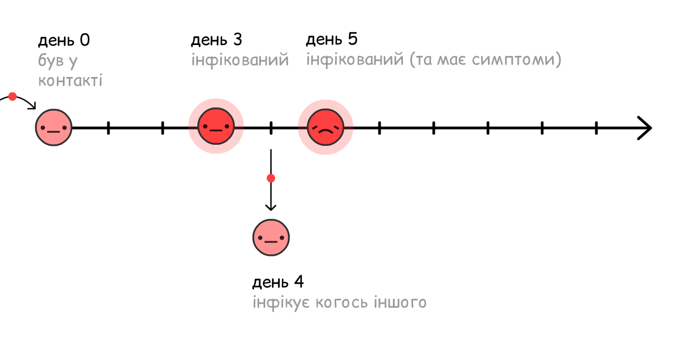
Якщо інфіковані самоізолюються лише тоді, коли вони знають, що захворіли (тобто коли відчувають симптоми), вірус вже міг поширитися на інших:
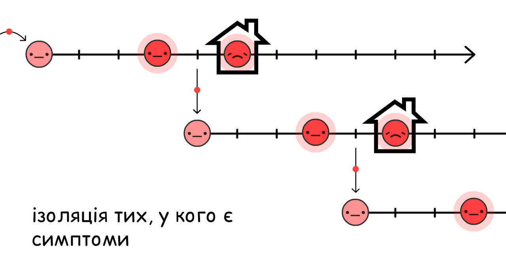
І наспраді, 44% всіх заражень саме такі: перед-симптомні! 22
Але, якщо ми знаходимо та ізолюємо людей, які були в нещодавньому контакті з хворими з вираженими симптомами...ми зупиняємо поширення вірусу, залишаючись на крок вперед!
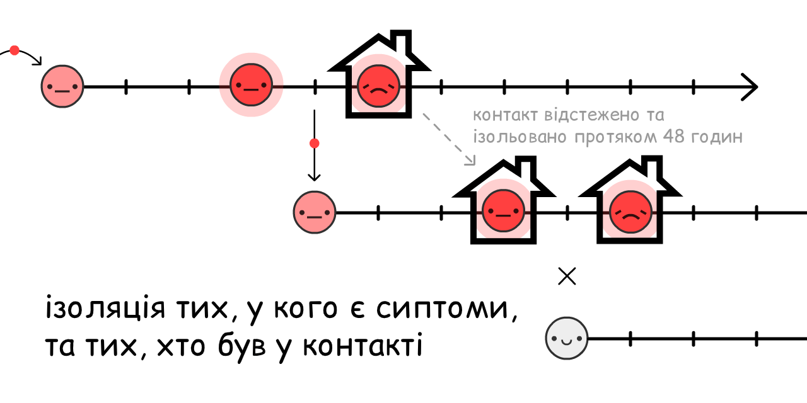
Це називається відстеженням контактів. Ідея ця не нова і була потужно використана, щоб стримати Еболу23, а зараз це ключова стратегія Тайваню та Південної Кореї щодо COVID-19!
(Це також допомагає нам розумніше використовувати обмежену кількість тестів у нашому розпорядженні, щоб знайти досимптоматичних
Традиційно, контакти встановлюються за допомогою особистих інтерв'ю, але сам по собі це занадто повільний спосіб для коронавірусного вікна у 48 годин. Тому він потребує додаткової підтримки - НЕ заміни - від додатків для відстеження контактів.
(Ця ідея прийшла не від ІТшників: використання подібних додатків було вперше запропоноване командою епідеміологів Oxford.)
Зажди, то ці додатки відслідковують, з ким ти зустрічався?...Це ж означає, що ми добровільно віддаємо свою приватність на поталу "Великому Брату"?
З два чорти! DP-3T, команді епідеміологів та криптографів (включаючи одного з нас, Marcel Salathé) вже розробляють додаток для відстеження контактів, код якого знаходиться у публічному доступі. Додаток не розкриває інформації про твою ідентичність, місцезнаходження, імена контактів та їх кількість .
Ось як він працює:
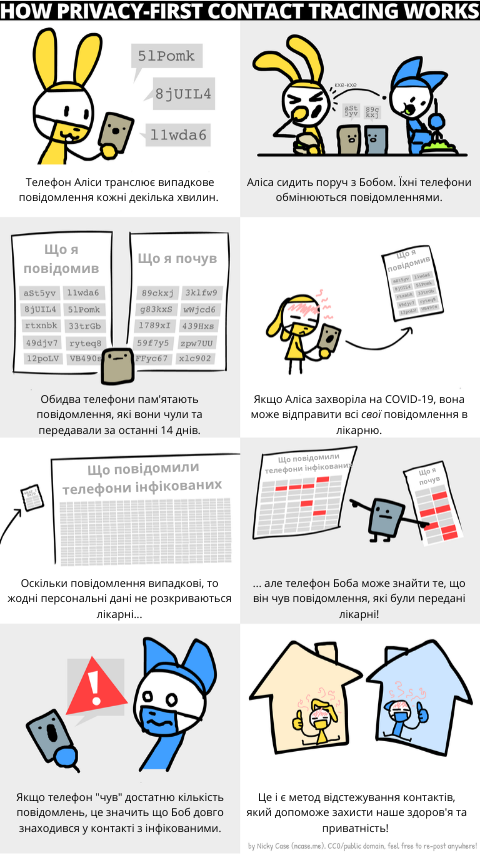
Разом зі схожими командами, як TCN Protocol[^tcn] та MIT PACT24, вони надихнули Apple та Google впровадити функцію конфіденційного відстеження контактів напряму в Android/iOS.25 (Не довіряєш Google/Apple? Добре! Привабливість цієї системи в тому, що їй не потрібна довіра!) Незабаром, місцеві органи охорони здоров'я можуть попросити тебе встановити додаток (або вже це зробили). Якщо це конфіденційний додаток з публічно доступним кодом, будь ласка, дослухайся до них! [^tcn]: Тимчасова Кількість Контактів, децентралізований, сфокусований на захисті конфіденційності протокол відстеження контактів
Але що на рахунок людей без смартфонів? Або інфікування через дверну ручки? Чи дійсно безсимптомні випадки? Додатки для відстежнення контактів не можуть зафіксувати всі зараження...і нічого страшного! Нам не потрібно відслідкувати всі передачі, лише 60%+, щоб отримати R < 1.
(Відсутність симптомів у перші дні часто плутають з асимптомальністю. "Справжні" асимптоматичні випадки зустрічаються рідко:26)
Ізоляція хворих із наявними симптомами може зменшити R на 40%, а ізоляція людей, які були з ними в контакті та ще не показують симптомів знижує R на 50%27:
Отже, навіть без ізоляції 100% всіх контактів, ми можемо отримати R < 1 без необхідності закривати міста! Це значно краще для нашого психологічного та фінансового благополуччя. (Держава має підтримувати тих, кому доведеться самоізолюватися, - оплатити тести, зберегти робоче місце, надати оплачуваний лікарняний тощо. Все ж значно дешевше, ніж закриття міст.)
Потім необхідно підтримувати R < 1, допоки вакцина не стане доступною, що перетворить сприйнятливих
(Зверни увагу: цей калькулятор припускає, що вакцини діють у 100% випадків. Пам'ятай, що через цю похибку, у реальному житті для досягнення колективного імунітету потрібно вакцинувати більше людей, ніж отримаємо в результаті.)
Добре, досить балачок. Ось симуляція:
- Декількох місяців у карантині, допоки ми не можемо...
- Перейти до режиму "Тестуй, Відстежуй, Ізолюй", допоки ми не...
- Вакцинуємо достатньо людей, а отже...
- Перемога.
Тож ось воно! Так ми зможемо здійснити аварійну посадку цього літака.
Так ми зможемо подолати COVID-19.
...
Але що, якщо все одно все піде погано? Вже відбулося багато недоброго. Що ж, страх - це не погано! Страх дає нам енергію розробити план Б.
Саме песиміст не забуває пошити парашут.
Сценарій 4+: Маски для всіх, Літо, Запобіжники
Що як R0 значно вище, ніж ми думали, й заходів, про які ми говорили, навіть з фізичним дистанціюванням, не достатньо для R < 1?
Пам'ятай, навіть, якщо ми не можемо досягнути R < 1, зменшення R все одно зберігає життя. Втім R < 1 - наша ціль, тому ось декілька способів зменшити R:
Маски для всіх:
"Зажди," можеш запитати ти, "Я думав(ла), що маски не захищають від інфікування?"
І це слушне зауваження. Маски не захищають тебе від зараження28... вони допомагають тобі не інфікувати інших.
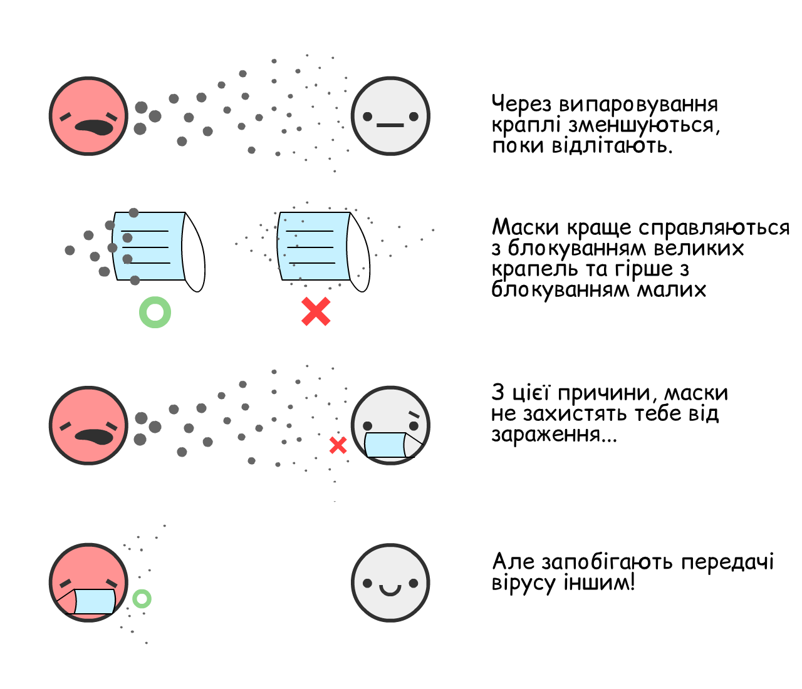
Якщо інфікована людина носить хірургічну маску, то це зменшує розпосюдження грипу на 70%. 29 Зменшення передачі на 70% мало би такий же вплив, як закриття міст!
Тим не менш, ми не маємо цілковитої впевненості, що маски мають такий же вплив на COVID-19. У науці дослідження мають бути опубліковані, лише коли ти на 95% впевнений у результатах. (...мають бути.30) Станом на 1 березня 2020, впевненість у ефективності мазок менша за 95%.
Тим не менш, пандемії чимось схожі на гру в покер. Роби ставки, лише коли впевнений на 95%, і ти втратиш все, на що ставив. Згідно з нещодавною статтею про маски з British Medical Journal,31 ми повинні здійснювати аналіз витрат/вигоди в умовах невизначенності. Як ось цей:
Витрати: Саморобні тканяні маски (~2/3 такі ж ефективні, як і хірургічні32), коштують дуже дешево. Хірургічні маски більш дорогі, але все ж доволі дешеві.
Вигода: Навіть якщо існує 50–50 шанс, що хірургічні маски зменшують передачу на 0% або 70%, середня "очікувана цінність" все ще 35%, така ж як у частковому закритті міст! Тож давай змоделюємо, що хірургічні маски зменшують R на 35%, зі знижкою на нашу невпевненість. (Знову ж, ти можеш перевірити наші припущення, змінюючи параметри)
(інші аргументи за/проти масок:33)
"Їх складно носити правильно." Мити руки відповідно до вказівок ВОЗ теж складно, але ми все одно рекомендуємо це робити, тому що неідальне миття рук, краще жодного.
"Люди почнуть більш недбало ставитися до миття рук та соціального дистанціювання." Звісно, і паски безпеки змушують людей ігнорувати дорожні знаки, а зубна нитка змушує їсти каміння. Але, якщо серйозно, ми би могли сказати протилежне: маски є постійним фізичним нагадуванням залишатися обережними, а в Східній Азії маски це також символ солідарності!
Самі лише маски не зменшать R до R < 1. Але якщо миття рук та "Тестуй, Відстежуй, Ізолюй" призводять до R = 1.10, то носіння масок лише 1/3 людей зменшить R до R < 1, вірус стримано!
Літо:
Окей, це не "захід", який ми можемо контролювати, але він допоможе! Деякі статті кажуть, що літо ніяк не повпливає на COVID-19. Вони частково праві: літо не знизить R до R < 1, але воно зменшить R.
Для COVID-19, кожен додатковий 1° знижує R на 1.2%.34 До прикладу, у Нью-Йорку різниця температур влітку та взимку складає 15°C, тож влітку R знизиться на 18%.
Лише літо не допоможе досягнути R < 1, але, якщо ми обмежені у ресурсах, ми можемо скоротити деякі заходи влітку, щоб застосувати їх на більшу потужність взимку.
Запобіжне Закриття Міст:
І якщо б цього всього все ще не було достатньо для R < 1... ми могли би закрити міста знову.
Але нам би не довелося мати 2 місяці закриття та 1 місяць без карантину знову та знову. Оскільки R було б зменшене, нам потрібно було би лише один чи два "запобіжних" карантини до того, як вакцина стане доступною. (Нещодавно Сингапуру довелося це зробити, незважаючи на те, що вони тримали COVID-19 під контролем 4 місяці. Це не поразка: це передумова успіху.)
Ось симуляція цього сценарію:
- Карантин потім
- Миття рук та "Тестуй, Відстежуй, Ізолюй", з помірною кількістю "Масок для всіх", потім...
- Ще один "запобіжний карантин" перед появою вакцини.
Не кажучи вже про інші заходи, які можуть допомогти знизити R:
- Обмеження подорожей
- Перевірка температури в магазинах та школах
- Дезінфікація публічних місць
- Заміна потискання рук на буцання ніг
- І все інше, що принесе людська винахідливість
Ми сподіваємося, що ці сценарії дають тебе обнадіють.
Навіть у песимістичному сценарії, все ще можливо подолати COVID-19, захистивши наше психологічне та фінансове здоров'я. Треба лишень використовувати закриття міст як кнопку перезапуску, тримати R < 1, ізолюючи окремі випадки та відстежуючи контакти з конфіденційними мобільними додатками і мати хоча би саморобні маски для всіх...і життя зможе повернутися до більш-менш нормального!
Звісно, твої руки стануть пересушеними від частого миття. Але ти зможеш запросити свою кохану людину на побачення до книгарні! Ти зможеш сходити на кіно з друзями. Ти зможеш спостерігати за людьми навколо, які насолоджуються простими радощами життя.
Навіть у найгіршому сценарію... життя вистоїть.
Тож зараз давай сплануємо для найгіршого сценарію. Приземлення на воду, будь ласка, дістаньте свої рятувальні жилети та слідуйте до аварійних виходів:
Ти інфікуєшся COVID-19 та одужуєш. Або прищеплюєшся від COVID-19. У будь-якому разі, тепер в тебе є імунітет...
...на як довго?
- COVID-19 найбільш схожий на SARS, який давав одужавшим 2 роки імунітету.[^SARS immunity]
- Коронавіруси, які призводять до звичайної застуди, дають 8 місяців імунітету.[^cold immunity]
- Існують свідчення одужавших від COVID-19 та повторно тестованих позитивно, але не зрозуміло, чи ці тести були хибно позитивні.35
- Одне неперевірене дослідження на мавпах показало імунітет до COVID-19 принаймні на 28 днів.36
Але станом на 1 травня 2020, імунітет **людей* до COVID-19 залишається невідомим.
[^SARS immunity]: “Антитіла SARS зберігалися протягом 2 років в середньому [...] Тож хворі на SARS могли заразитися повторно через ≥3 роки після початкового зараження.” Wu LP, Wang NC, Chang YH, et al. "На жаль", ми ніколи не дізнаємося, на скільки довго вистачає імуінітету від SARS, оскільки ми позбулися його так швидко.
[^cold immunity]: Ми не виявили великої різниці між вірогідністю мати позитивний тест хоча б одного разу та вірогідністю повторення бета-коронавірусів HKU1 та OC43 на 34 тижні після першого зараження.” Marta Galanti & Jeffrey Shaman (PDF)
Для цих симуляцій припустимо, що імунітет зберігається 1 рік. Ось симуляція, що починається зі 100%
І знову крива експоненційного згасання!
Це та сама SEIRS Модель. Остання "S" означає
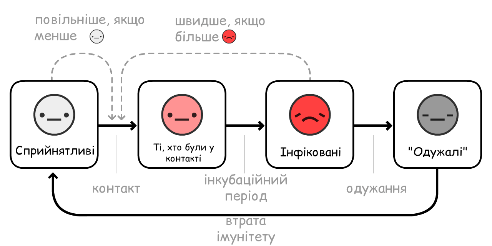
Тепер, давай зсимуляємо спалах COVID-19 протягом 10 років без вжиття жодних заходів... з умовою, що імунітет зберігається лише 1 рік:
В попередній симуляції ми спостерігали лише один спалах який перенавантажив палати інтенсивної терапіх, та кількість
R = 1, це - ендемія.
На щастя, літо зменшує R, тому це зробить ситуацію краще:
Ох.
Парадоксально, літо робить спалахи гіршими та регулярними! Через те, що літо зменшує кількість нових
На щастя, вирішення є дуже простим – вакцинуйте людей кожну осінь/зиму, так само як роблять це з щепленням від грипу:
(Після прогавання запису, спробуйте симуляцію вашої власної кампанії вакцинації! Пам'ятайте що ви можете зупини та продовжити симуляцію в будь-який момент)
Але ось ще страшніше питання:
Що буде якщо вакцини не буде роками? Або взагалі?
Щоб було зрозуміло: це малоймовірно. Більшість епідеміологів очікують вакцину через 1-2 роки. Так, до цього ніколи не було вакцини для будь-якого іншого коронавірусу, але це через те, що SARS був викорінений швидко, а звичайна ГРВІ не варта того.
Тим не менш, дослідники інфекційних захворювань висловили свої переживання: Що буде якщо ми не можемо зробити дотстатньо? 37 Що буде якщо ми поспішимо, та вона не буде безпечна? 38
Навіть у кошмарному "без-вакцини" сценарії, ми все одно маємо 3 виходи. Від найбільш до найменш страшних:
1) Робити переривчасті або послаблені R < 1 втручання, щоб досягнути "колективний імунітет". (Увана: це призведе до багатьох смертей та пошкоджених легенів. Та не спрацює якщо імунітет не є дуже довгостроковим.)
2) Робити R < 1 заходи втручання постійно. Відстеження контактів та носіння масок стає новою нормою у після-COVID-19 світі, так само як ІПСШ тести та використання презервативу стали новою нормою у після-ВІЛ світі.
3) Робити R < 1 заходи втручання поки ми не створимо процедури лікування, що зроблять набагато, набагато менш шанс, що лікування COVID-19 вимагатиме інтенсивної терапії. (Не дивлячись на те, що ми все одно маємо це робити!) Зменшення кількості палатн інтенсивної терапії в 10 разів, те саме що збільшення кількості палат в 10 разів:
Ось симуляція без довговічний імунітету, без вакцини та навіть без будь-який заходів втручання - лише повільно збільшуйте місткість щоб пережити довгострокові спалахи
Навіть у найгіршому з найгірших випадків... життя було врятовано.
Можливо ви б хотіли заперечити нашим припущенням та спробувати інший R0's або інші параметри. Або спробувати просимулювати вашу власну комбінацію заходи втручання!
Ось (необов'язковий) Режим Пісочниці, зі всіма параметрами. (Скрольте вниз щоб побачити всі параметри) Симулюйте та грайтесь скільки вашій душі завгодно:
Основний "симулятор польоту епідемії" навчив нас багато чому. Він дав нам можливість відповісти на питання про декілька минулих місяців, декілька місяців у майбутньому та наступні роки.
Тому врешті-решт, давайте повернемось до...
Літак потонув. Ми заскочили на рятувальні плоти. Настав час щоб знайти нарешті землю.39
Команди епідеміологів та політиків (лівих, правих, та багатопартійних) мають певний консенсус в тому як побороти COVID-19, тим часом захищаючи наші життя та своботи.
Ось приблизна ідея, з деякими (менш популярними) запасними планами:
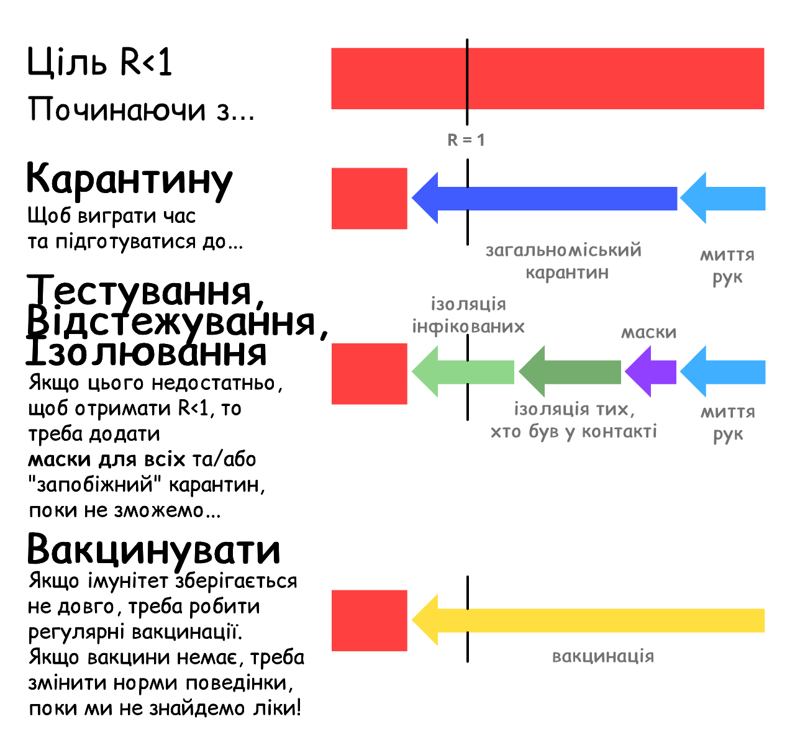
То що це значить для ВАС, зараз?
Для всіх: Поважайте карантин, щоб ми всі могли вийти з першої фази якмога швидке. Продовжуйте мити ті руки. Робіть свої власні маски для обличчя. Завантажуйте додатки для відстеження контактів які поважають приватність, після того як вони стануть доступні через декілька місяців. Будьте здорові, фізично та психологічно! Та пишіть своїй місцевій владі підняти свою дупу і...
Для політиків: Створюйте закони для підтримки людей які мають бути в самоізоляці/карантині. Наймайте більше людей для відстеження контактованих людей, яким будуть допомогати додатки які поважають приватність відстеження контактів. Виділяйте більше коштів до речей які ми маємо будувати, як наприклад...
Для виробників/творців: Створюйте тести. Створюйте вентилятори. Створюйте персональні засоби захисту для лікарень. Створюйте тести. Створюйте вентилятори. Створюйте додатки. Створюйте противірусні, профілактичні та інші засоби, крім вакцин. Створюйте вакцини. Створюйте тести. Створюйте тести. Створюйте тести. Створюйте надію.
Не знецінюйте страх, щоб створювати надію. Наш страх має йти в крок з нашою надією, як винахідники літаків та парашутів. Готуючись до страшного майбутнього, ми формуємо обнадійливе майбутнє.
Єдина річ яке ми маємо боятись, це ідея що єдине чого нам требя боятись, це страху самого по собі. TODO
Ці примітки міститимуть джерела, посилання чи бонусні коментарі. Як оцей коментар!
Цей гайд було опубліковано 1 травня, 2020. Багато деталей застарішають, але ми впевнені, що гайд охопить 95% сценаріїв майбутнього і що Епідеміологія 101 буде корисною завжди.↩︎
"Середній [serial] інтервал був 3.96 днів (95% CI 3.53–4.39 days)”. Du Z, Xu X, Wu Y, Wang L, Cowling BJ, Ancel Meyers L (Дисклеймер: Ранні видання статті не вважаються фінальними версіями)↩︎
Пам'ятай: усі ці симуляції дуже спрощені для освітніх цілей.
Одне спрощення: Коли ти кажеш цій симуляції "Інфікуй 1 людину кожні X днів", вона наспрвдні збільшує # інфікованих на 1/X кожного дня. Те ж відбувається у наступних параметрах цих симуляцій – "Одужує кожні X днів" насправді зменшує # інфікованих на 1/X кожного дняю
Вони не є тотожними, але достатньо наближені, і у освітніх цілях більш зрозумілі, ніж пряме введення показників передачі та одужання.↩︎
“Медіанний період передачі [...] був 9.5 днів.” Hu, Z., Song, C., Xu, C. et al Так, ми знаємо, що "медіанний" не тотожно "середньому". Достатньо наближено для освітніх цілей.↩︎
Для більш технічних пояснень Моделі ВІО, читай the Institute for Disease Modeling та Wikipedia↩︎
Для більш технічного пояснення ВІОК Моделі, читай the Institute for Disease Modeling та Wikipedia↩︎
“Припускаючи, що інкубаційний період розподілення в середньому 5.2 days з іншого дослідженна ранніх випадків COVID-19, ми зробили висновок, що розповсюдження вірусу починалося з 2.3 days (95% CI, 0.8–3.0 дні) перед появою симптомів” (переклад: Припускаючи, що симптоми розпочинаються з 5 дня, розповсюдження починається 2 дні раніше = Розповсюдження починається з 3 дня) He, X., Lau, E.H.Y., Wu, P. et al.↩︎
“Медіанне значення R для сезонного грипу було 1.28 (IQR: 1.19–1.37)” Biggerstaff, M., Cauchemez, S., Reed, C. et al.↩︎
“За нашими оцінками, R0 2019-nCoV приблизно дорівнює 2.2 (90% інтервалу найбільшої густини: 1.4–3.8)” Riou J, Althaus CL.↩︎
“Ми підрахували медіанне значення R0 дорівнює 5.7 (95% CI 3.8–8.9)” Sanche S, Lin YT, Xu C, Romero-Severson E, Hengartner N, Ke R.↩︎
Це лише враховуючи, що ти однаково розповсюджуєш інфекцію протягом усього періоду, коли ти можеш заражати інших. Знову ж таки, це спрощення для освітніх цілей.↩︎
Пам'ятай R = R0 * кількість дозволених заражень. Пам'ятай також, що кількість дозволених заражень = 1 - кількість заражень, які були недопущені.
Отже, щоб отримати R < 1, потрібно отримати R0 * Кількість дозволених заражень < 1.
Отже, Кількість дозволених заражень < 1/R0
Отже, 1 - Кількість недопущених заражень < 1/R0
Отже, Кількість недопущених заражень > 1 - 1/R0
Отже, потрібно зупинити більше, ніж 1 - 1/R0 заражень, щоб отримати R < 1 і приборкати вірус!↩︎
"Відсоток випадків COVID-19 у США з 12 лютого по 16 березня, які потребували палати інтенсивної терапії, відповідно до вікових груп". Від 4.9% до 11.5% усіх COVID-19 хворих потребували ПІТ. Навіть якщо рахувати з найнижчої межі, це 5% або 1 з 20. Зверни увагу, що ці числа відповідають особливостям вікового складу США і можуть бути вищими у країнах зі старішим населенням та нижче країнах з молодшим населенням.↩︎
“Кількість ліжок у ПІТ = 96,596”. Від the Society of Critical Care Medicine населення США було 328,200,000 у 2019. 96,596 з 328,200,000 = приблизно 1 з 3400.↩︎
“Він каже, що справжня ціль така ж, як і ціль інших країн: вирівняти криву, рівномірно розподіляючи інфікування. У наслідок, нація може отримати колективний імунітет, це побочний ефект, а не самоціль. [...] Справжній план уряду, доступний онлайн, навіть не згадує про колективний імунітет.”
З статті у The Atlantic by Ed Yong↩︎
“Всі вісім повноцінних дослідженнь стверджують, що миття рук зменшує ризик ОРВІ від 6% до 44% [сумарне значення 24% (95% CI 6–40%)].” Ми округлили сумарне значення до 25% у симуляціях для спрощення. Rabie, T. and Curtis, V. Примітка: згідно з цим аналізом, дослідження про миття рук (принаймні у заможних країнах) залишають бажати кращого.↩︎
“Ми помітили зниження на 73% в середньому щоденної кількості контактів кожного учасника спостреження. Цього було би достатньо, щоб зменшити значення R0 з 2.6 перед закриттям до 0.62 (0.37 - 0.89) після закриття міста”. Ми округлили це число до 70% у симуляціях для спрощення. Jarvis and Zandvoort et al↩︎
Це спотворення зникло б, якщо би ми помістили R на логарифмічну шкалу...але тоді довелося би пояснювати Логарифмічні шкали.↩︎
За відсутності інших заходів, ключова метрика успіху соціального дисціонування це заповненість палат інтенсивної терапії. Щоб запобігти цьому, може виникнути потреба продовжити соціальне дистанціювання або застосовувати його періодично до 2022 року.” Kissler and Tedijanto et al↩︎
Читай Figure 6 from Holt-Lunstad & Smith 2010. Звісно, зверни увагу, що було виявлено саме кореляцію. Але, окрім спостереження, не існує іншого способу перевірити цю гіпотезу, хіба що примусово вказувати піддослідним залишатися самотніми усе життя.↩︎
3 дні в середньому, щоб почати заражати інших: “Припустивши, що інкубаційний період в середньому є 5.2 днів, згідно з іншим досліженням ранніх випадків COVID-19, ми зробили висновок, що розповсюдження вірусу носієм починалося з 2.3 днів (95% CI, 0.8–3.0 днів) перед початком симптомів” (переклад: Припускаючи, що симптоми починаються на 5 день, розповсюдження інфекції починається за 2 дні = Тобто розповсюдження починається на 3 день) He, X., Lau, E.H.Y., Wu, P. et al.
4 дні в середньому, щоб заразити інших: “Середній інтервал був 3.96 днів (95% CI 3.53–4.39 днів)” Du Z, Xu X, Wu Y, Wang L, Cowling BJ, Ancel Meyers L
5 днів в середньому, щоб відчути симптоми: “Медіанний інкубаційний період від 5.1 днів (95% CI, 4.5 до 5.8 днів)” Lauer SA, Grantz KH, Bi Q, et al↩︎
“Ми встановили, що 44% (95% точності, 25–69%) другорядних заражень відбулося під час передсимптомального стану перших заражень” He, X., Lau, E.H.Y., Wu, P. et al↩︎
Відстеження контактів було критично важливим заходом у Ліберії та стало одним із наймасштабніших у історії епідеміології.” Swanson KC, Altare C, Wesseh CS, et al.↩︎
Apple та Google співпрацюють над розробкою технологій для відстеження передачі COVID-19. Зверни увагу, що вони не розрозбляють додаток самотужки, лише створюють системи, які підтримуватимуть роботу таких додатків.↩︎
Багато новин - та й багато наукових статей - не підкреснювали відмінності між "хворими, які не мали симптомів під час тестування" (досимптоматичні) та "хворими, які ніколи не мали симптомів" (справжня асимптомність). Єдиний спосіб розрізнити їх - відслідковувати хворих після тестування.
Саме це й зробило це дослідження. (Примітка: "Ранні публікації статей не вважаються фінальними версіями.") У кол-центрі в Південній Кореї, де відбувся спалах COVID-19 , "лише 4 (1.9%) не мали ніяких симптомів протягом 14 днів карантину, й ніхто з їхніх співмешканців не інфікувався."
Це означає, що "справжня асимптоматичність" зустрічається дуже рідко, а зараження від асимптоматичних хворих ще рідше!↩︎
З того ж дослідження Оксфорду, яке першим порекомендувало створити додаток для боротьби з COVID-19: Luca Ferretti & Chris Wymant et al Дивись Figure 2. Припустивши, що R0 = 2.0, вони з'ясували, що:
- Симптоматичні хворі складають R = 0.8 (40%)
- Досимптомні хворі R = 0.9 (45%)
- Асимптоматичні хворі R = 0.1 (5%, втім це число може бути набагато меншим)
- Зараження з навколишнього середовища, наприклад, через ручки дверей R = 0.2 (10%)
Додай сюди контакти хворих, які поки не мають/не матимуть симптомів(45% + 5%) і отримаєш 50% R!↩︎
Жодна з представлених хірургічних масок не продемонструвала достатню фільтруючу здатність та не відповідає іншим характеристикам, щоб вважатися захисним респіраторним засобом.” Tara Oberg & Lisa M. Brosseau↩︎
Загальне зменшення у 3.4 рази [70% зменшення] у in aerosol copy numbers we observed combined with a nearly complete elimination of large droplet spray demonstrated by Johnson et al. suggests that surgical masks worn by infected persons could have a clinically significant impact on transmission.” Milton DK, Fabian MP, Cowling BJ, Grantham ML, McDevitt JJ↩︎
Будь-який справжній науковець, мабуть, вже сміється/плаче з останніх речень. Читай: p-hacking, the replication crisis)↩︎
Настав час застосувати запобіжні заходи” Trisha Greenhalgh et al [PDF]↩︎
Davies, A., Thompson, K., Giri, K., Kafatos, G., Walker, J., & Bennett, A Дивись Table 1: 100% бавовняна футболка має 2/3 фільтруючої здатності хірургічних масок, згідно з тестуваннями двома бактеріальними аерозолями.↩︎
"Нам потрібно зберегти запаси для лікарень." Повністю погоджуємося. Але це швидше аргумент на користь збільшення виготовлення масок, а не їх розподілення. Тим часом, ми можемо користуватися тканяними масками.↩︎
“Підвищення температури на 1 градус Цельсію [...] знижує [s] R на 0.0225” і “Середнє значення R цих 100 міст 1.83”. 0.0225 ÷ 1.83 = ~1.2%. Wang, Jingyuan and Tang, Ke and Feng, Kai and Lv, Weifeng↩︎
Коли людина справляєтсья з вірусом, вірусні частинки залишаються на якийсь час. Вони не можуть спричинити інфікування, але можуть спричинити позитивний тест.” from STAT News by Andrew Joseph↩︎
Від Bao et al. Примітка: Ця стаття була лише у перед-публікації і не була розглянена експертами. Також варто зауважити, що вони проводили тести на повторне інфікування лише після 28 днів.↩︎
“Якщо вакцина від коронавірусу з'явиться, чи зможе світ виробити її достатньо? (англ)” by Roxanne Khamsi, on Nature↩︎
“Не спішіть задіювати COVID-19 вакцину або ліки без достатніх гарантій безпекиs” by Shibo Jiang, on Nature↩︎
Метафора про пошук землі від Marc Lipsitch та Yonatan Grad, on STAT News↩︎
 PUBLIC DOMAIN
That means you already have permission to re-use & remix
any of the art/code/words on this page – on blogs, news sites, classrooms, anywhere!
PUBLIC DOMAIN
That means you already have permission to re-use & remix
any of the art/code/words on this page – on blogs, news sites, classrooms, anywhere!